Abstract
실세계 로봇 강화학습의 가장 큰 장애물은 데이터 효율이다. Platt은 그 해법으로 물리 세계의 병진·회전 대칭을 신경망 구조에 직접 반영하는 등변 모델을 제안한다. 포인트 클라우드를 사용한 Equivariant Diffusion Policy는 MimicGen에서 비등변 기준선보다 최대 10배 높은 데이터 효율을 보였고, RGB 이미지를 구면에 투영한 Image 2 Sphere Policy도 약 2배의 효율 향상을 기록했다. 이 결과는 “데이터를 더 넣자”는 전략을 부정하기보다, 구조적 귀납 편향으로 스케일링 곡선의 출발점을 옮겨야 한다는 주장에 가깝다.
Executive Summary
먼저 기억할 다섯 가지
로봇은 인터넷에서 행동 데이터를 내려받을 수 없다. 시행착오 한 번마다 시간, 장비, 안전 비용이 발생한다.
이미지의 공간 관계는 잠재 표현으로 압축되고, 정책 헤드는 물리적 회전과 병진을 구조적으로 보장하지 않는다.
등변 층은 환경이 회전하면 정책 출력도 함께 회전하도록 파라미터를 묶어 학습 문제를 줄인다.
포인트 클라우드 기반 모델은 최대 10배, RGB 구면 임베딩은 약 2배의 데이터 효율 향상을 보였다.
데이터·연산·파라미터를 계속 늘리기 전에, 같은 성능을 더 적은 자원으로 얻는 모델 구조가 필요하다.
01 · The Bottleneck
모방 다음의 마지막 간극
발표의 출발점은 익숙하다. 인간의 시연 데이터를 모아 행동 복제나 VLA 정책을 학습하고, 그다음 실제 물리 시스템에서 강화학습으로 성능을 끌어올린다. Platt에게 실기 RL은 sim-to-real 간극뿐 아니라 “그럭저럭 작동하는 정책”과 “현장에서 믿고 쓸 수 있는 정책” 사이를 메우는 유력한 수단이다.
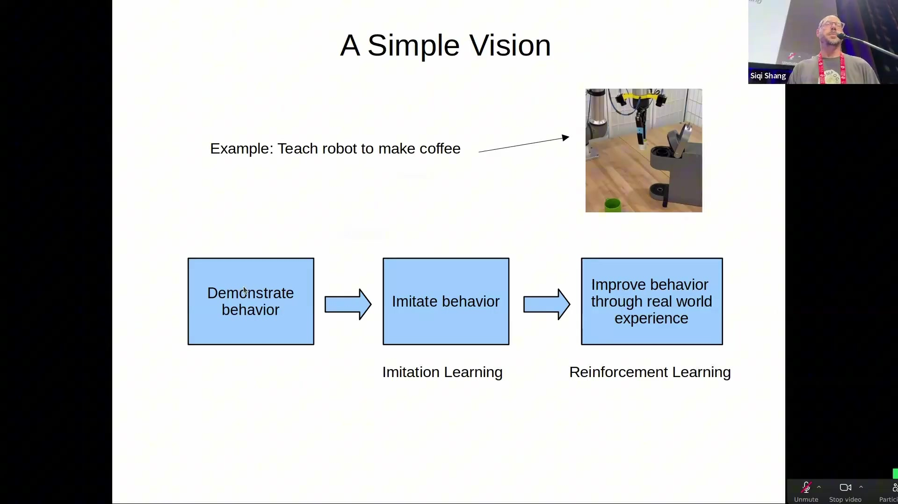
문제는 마지막 단계가 앞선 단계들보다 훨씬 어렵다는 데 있다. 발표는 VLA를 RL로 개선하려 할 때 마주치는 난관을 네 가지로 정리한다.
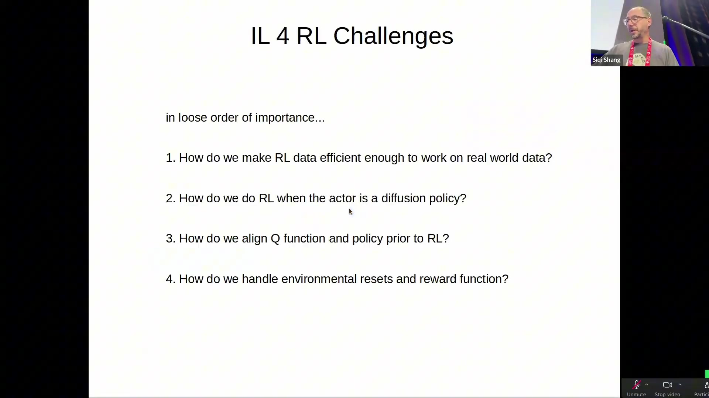
- 데이터 효율: 실제 세계에서 반복할 수 있을 만큼 적은 시행착오로 학습해야 한다.
- Diffusion actor: diffusion policy를 안정적이고 효율적으로 RL에 연결해야 한다.
- 정책–가치 정렬: RL 시작 전에 Q 함수와 정책을 맞춰 초기 성능 붕괴를 막아야 한다.
- 운영 비용: 환경 리셋과 보상 함수 설계가 자동화되어야 한다.
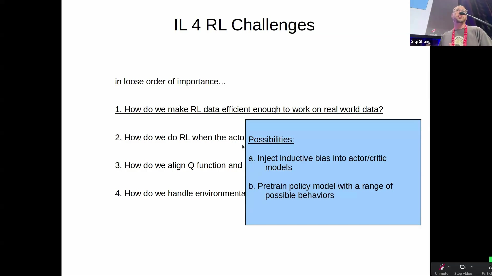
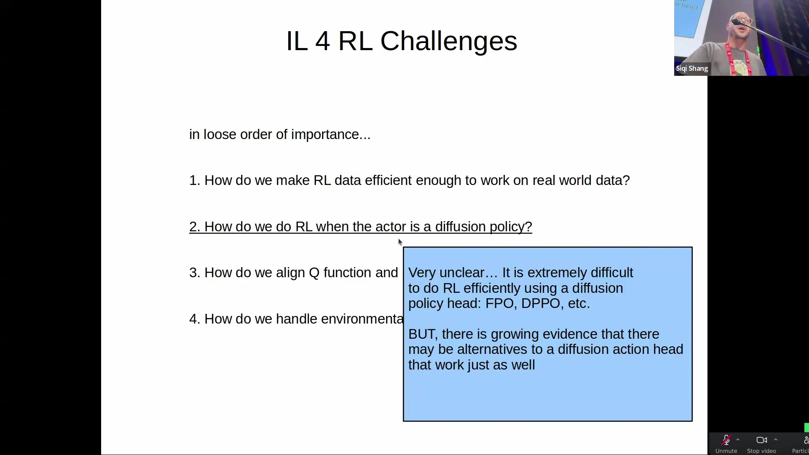
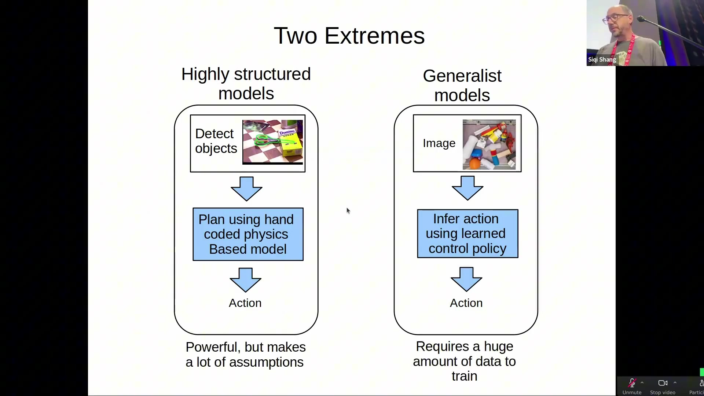
데이터 효율을 높이는 방법은 크게 두 가지다. 다양한 행동으로 사전학습하거나, actor와 critic에 유용한 귀납 편향을 심는 것이다. 이 발표는 후자를 택한다. 다만 과거의 수작업 물리 모델로 완전히 돌아가자는 뜻은 아니다.
“고도로 구조화된 모델과 완전한 generalist 모델 사이에는 정말 아무것도 없는가?”
Robert Platt · 00:06:10
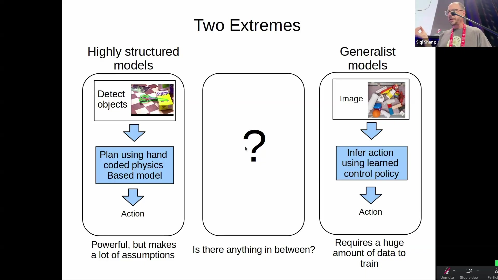
02 · What Models Forget
VLA는 어디에서 기하학을 잃는가
LBM, ManiFlow, DiT block policy, XVLA 등 오늘날의 접근은 서로 다르지만 대체로 하나의 뼈대를 공유한다. 사전학습된 비전 인코더 또는 VLM이 관측을 잠재 표현으로 바꾸고, diffusion action head가 행동 궤적을 생성한다.
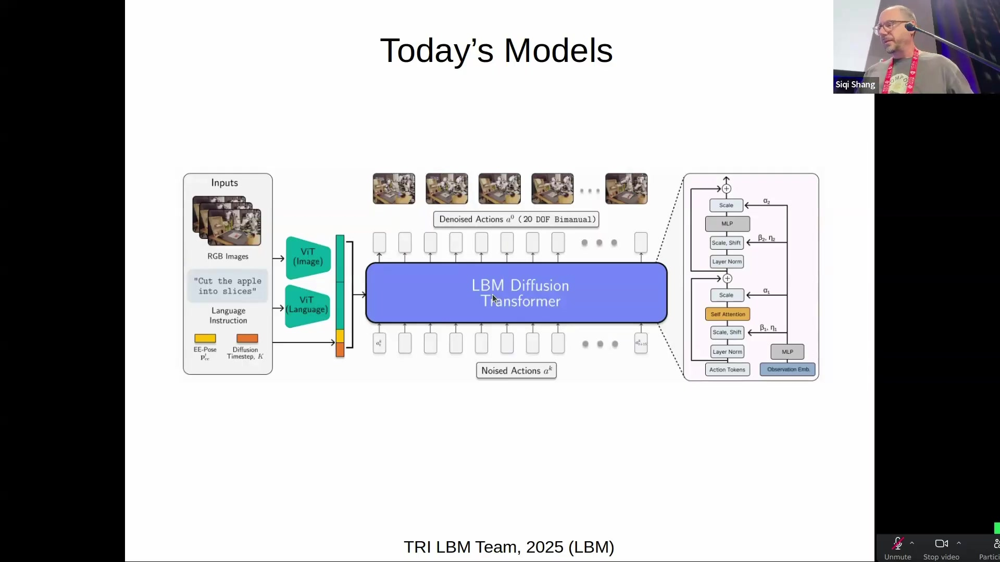
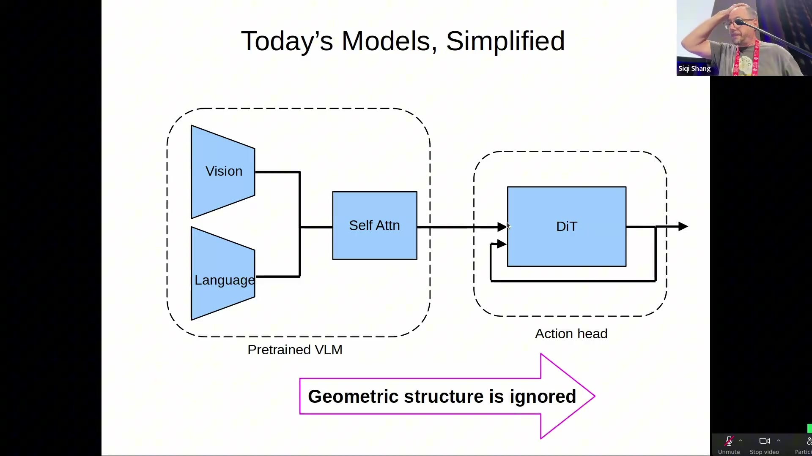
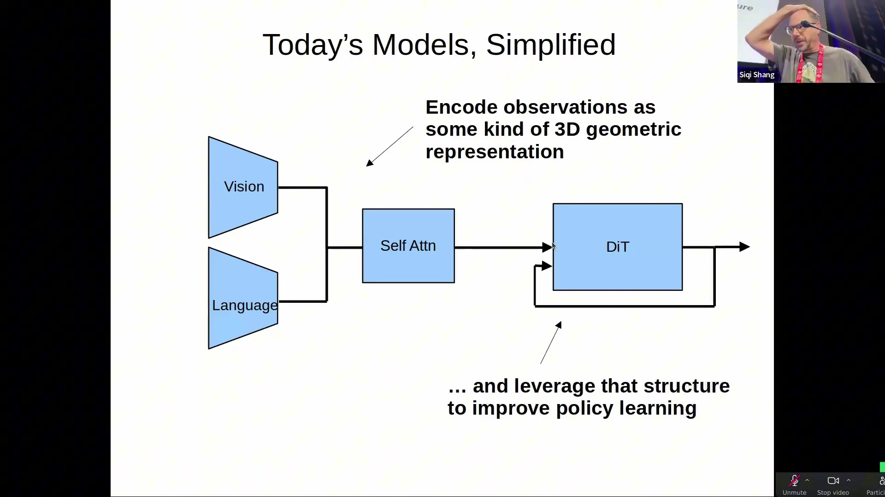
ViT에 들어갈 때의 위치 인코딩이 모델이 명시적으로 보는 마지막 기하 정보라면, 이후의 정책은 같은 장면이 회전했을 때 출력도 동일하게 회전해야 한다는 사실을 데이터로 다시 배워야 한다. 한 자세에서 배운 행동이 다른 자세로 자동 일반화되지 않는 이유다.
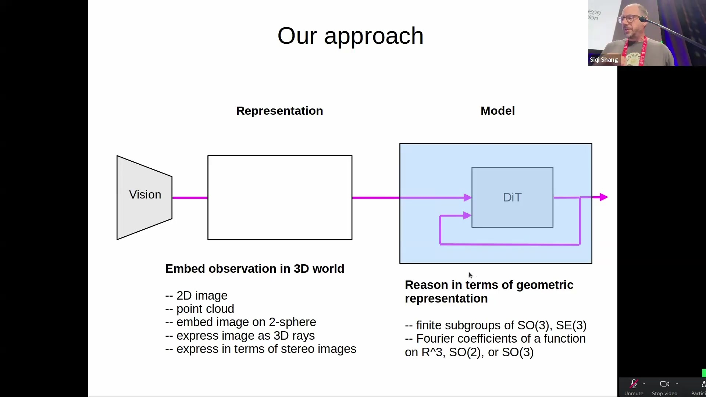
| 축 | 선택지 | 핵심 절충 |
|---|---|---|
| 입력 표현 | 2D 이미지, 포인트 클라우드, 구면 임베딩 이미지, 3D 광선, 스테레오 | RGB 접근성과 3D 구조 보존량 사이의 균형 |
| 군 기반 추론 | SE(2), SO(3), SE(3)의 유한 부분군 | 구조적 보장과 계산 복잡도 사이의 균형 |
| 주파수 추론 | R³, SO(2), SO(3) 위 함수의 푸리에 계수 | 연속 대칭을 다루면서 효율적인 컨볼루션 수행 |
| 기하 어텐션 | Self-attention에 기하 임베딩 결합 | 유연성은 높지만 대칭 보장의 형태가 설계에 의존 |
03 · The Design Principle
보존 법칙을 원한다면 대칭성을 넣어라
이 접근의 이론적 배경으로 Platt은 Noether 정리를 호출한다. 보존력을 가진 물리계에서 작용의 연속 대칭은 대응하는 보존 법칙과 연결된다. 시간 대칭은 에너지 보존, 공간 병진 대칭은 운동량 보존, 공간 회전 대칭은 각운동량 보존으로 이어진다.
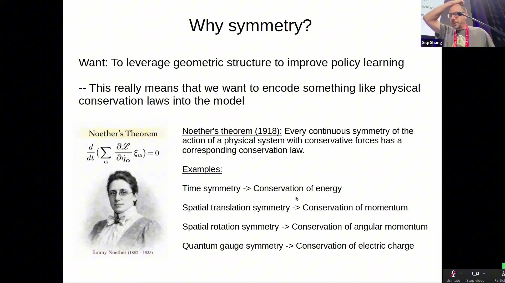
신경망이 물리 세계의 보존 구조를 더 쉽게 학습하게 하려면, 가능한 모든 함수를 탐색하게 두는 대신 해당 대칭을 만족하는 함수 공간으로 학습을 제한할 수 있다. 병진과 회전 대칭을 보존하는 등변 신경망 층이 그 구현 수단이다.
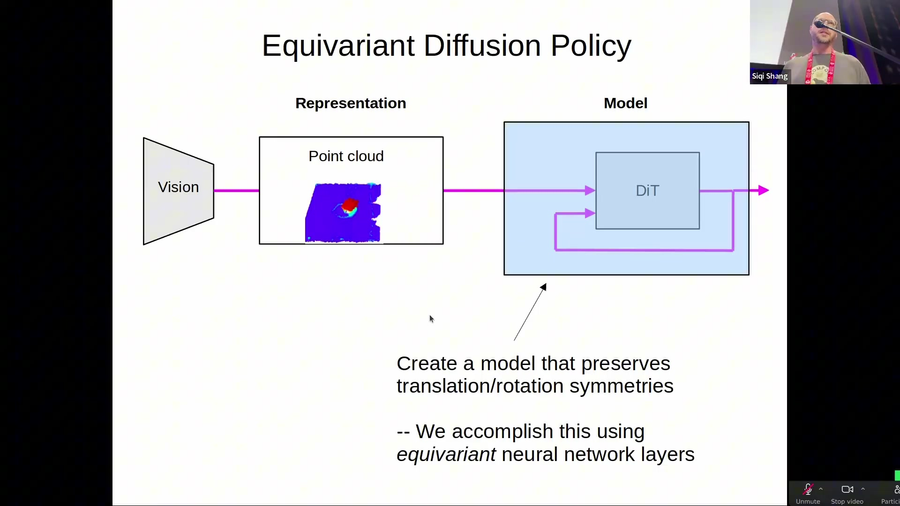
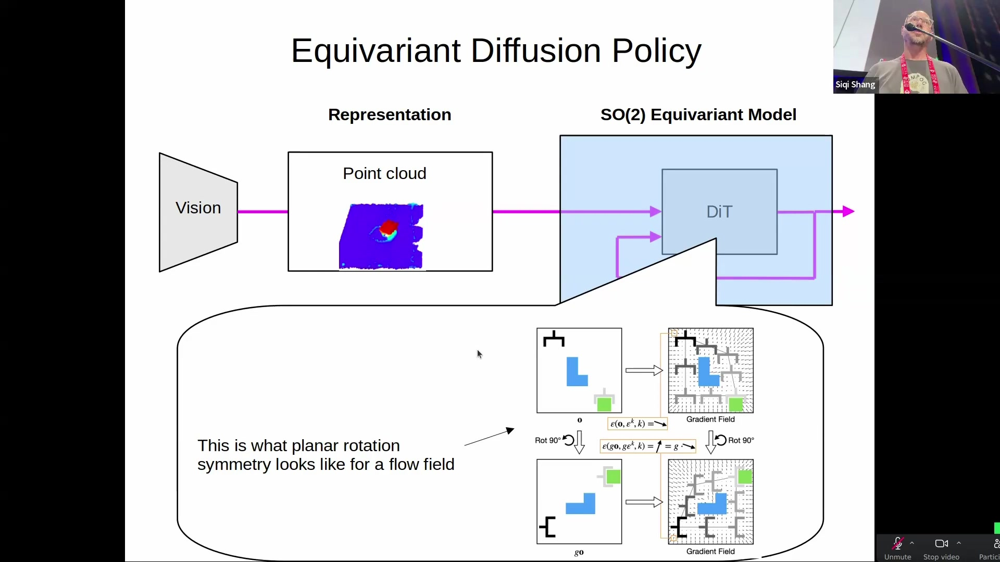
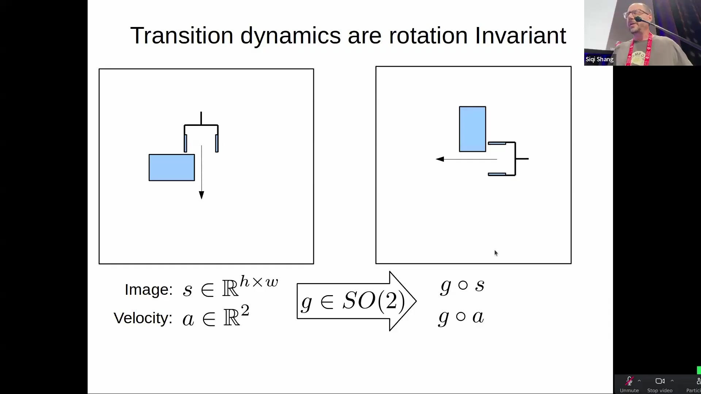
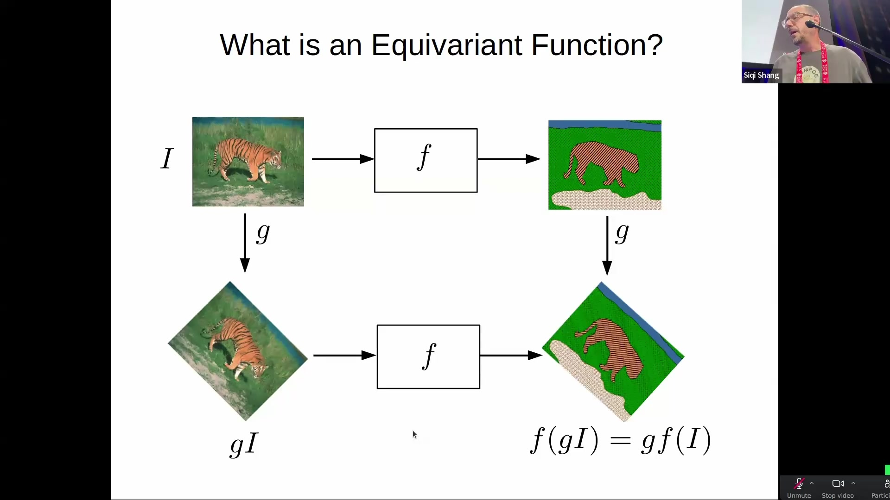
이 정의는 “세계가 불변이면 최적 정책은 등변”이라는 주장으로 이어진다. 장면 전체가 회전해도 과제의 물리적 의미가 같다면, 정책 출력 역시 같은 방식으로 회전해야 한다. 모델은 서로 다른 자세를 완전히 별개의 사례로 외울 필요가 없다.
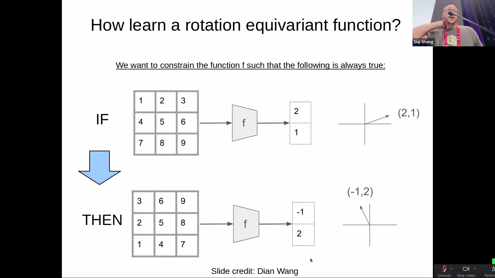
04 · Two Implementations
포인트 클라우드와 구면 이미지
방법 1 — Equivariant Diffusion Policy
첫 번째 방법은 포인트 클라우드의 3차원 구조를 직접 활용한다. PC Transformer 인코더와 디코더를 SO(3)의 유한 부분군에 대해 등변으로 구성하고, diffusion 정책의 행동 생성 과정에도 같은 구조를 유지한다. 이 연구는 CoRL 2024 Best Paper Finalist로 소개됐다.
Equivariant Diffusion Policy
클라우드
PC Transformer
디코더
행동 궤적
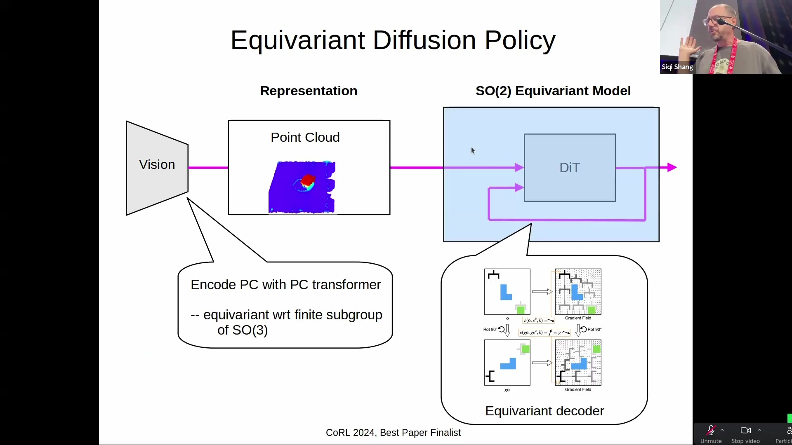
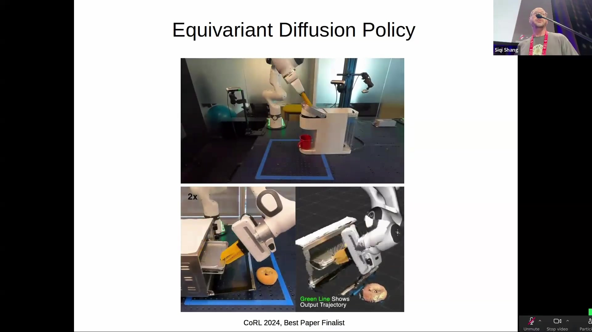
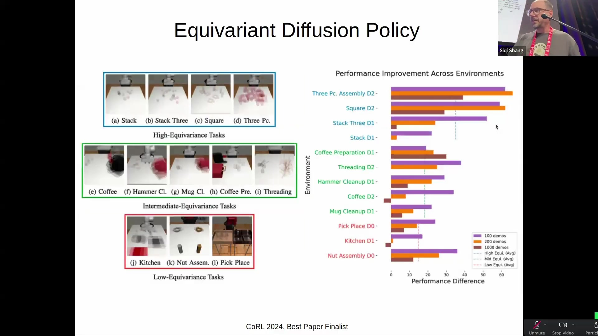
방법 2 — Image 2 Sphere Policy
포인트 클라우드는 기하학적으로 이상적이지만 모든 로봇 시스템이 고품질 3D 관측을 제공하는 것은 아니다. RGB 이미지를 받아들이기 위해 Image 2 Sphere Policy는 2D 이미지를 2-구면에 투영하고, 구면 조화 함수의 계수로 추론한다. 이 연구는 NeurIPS 2025 Spotlight로 소개됐다.
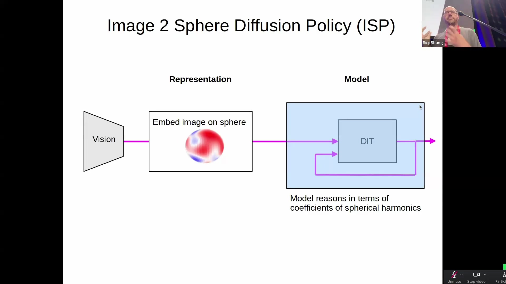
Image 2 Sphere Policy
구면에 임베딩
구면 회전
푸리에 변환
및 역변환
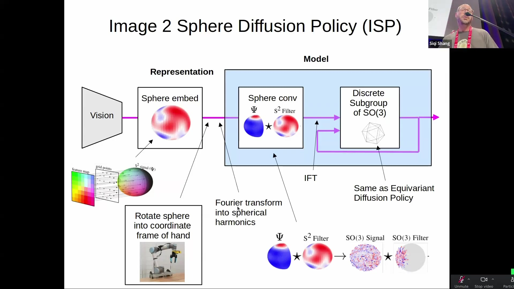
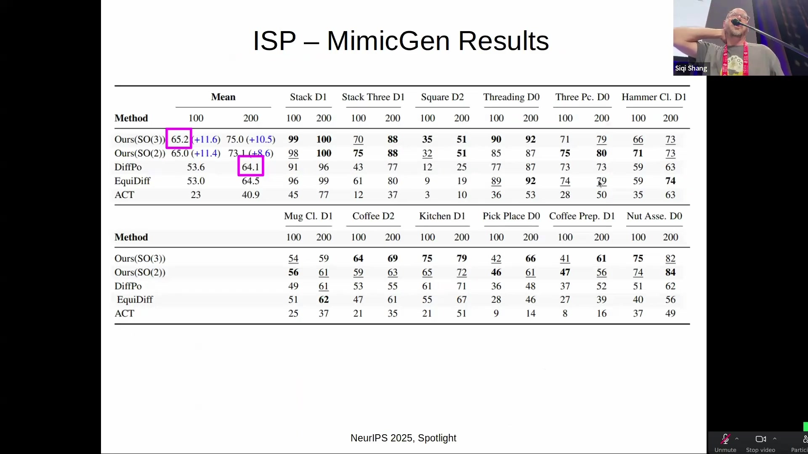
05 · Evidence
데이터 효율 10배라는 숫자
등변 모델은 데모 100개로 학습했을 때 같은 모델의 비등변 버전이 데모 1,000개로 학습한 성능을 앞섰다.
결과에서 특히 중요한 패턴은 대칭성의 정도와 이득의 크기가 함께 움직였다는 점이다. 과제를 고등변성·중간등변성·저등변성으로 나누면, 물체와 로봇의 자세 변화가 풍부한 과제일수록 등변 모델의 개선 폭이 커졌다. 이는 단순히 모델 크기나 정규화 효과가 아니라, 과제가 실제로 가진 구조와 귀납 편향이 맞을 때 이득이 발생한다는 해석을 뒷받침한다.
| 접근 | 입력 | 기하 처리 | 보고된 데이터 효율 | 해석 |
|---|---|---|---|---|
| Equivariant Diffusion Policy | 포인트 클라우드 | SO(3) 유한 부분군 등변 인코더·디코더 | 최대 10배 | 3D 구조를 직접 보존해 가장 큰 이득 |
| Image 2 Sphere Policy | RGB 이미지 | 구면 임베딩과 구면 조화 추론 | 약 2배 | RGB 접근성을 얻는 대신 일부 3D 구조를 포기 |
“구조를 덜 사용한 만큼 효율도 줄었다”는 대응 관계는 이 발표에서 가장 실용적인 메시지 중 하나다. 센서 선택과 표현 설계가 모델 앞단의 부수적인 결정이 아니라, 얻을 수 있는 데이터 효율의 상한을 바꿀 수 있다는 뜻이기 때문이다.
06 · Shift the Curve
로보틱스에서 스케일링은 피로스의 승리가 될 수 있다
2020년 전후의 신경망 스케일링 법칙은 연산량, 데이터셋 크기, 파라미터 수를 늘리면 손실이 멱법칙에 따라 개선된다는 관점을 널리 퍼뜨렸다. 여기서 얻기 쉬운 결론은 단순하다. 성능이 부족하면 데이터를 더 넣으면 된다.
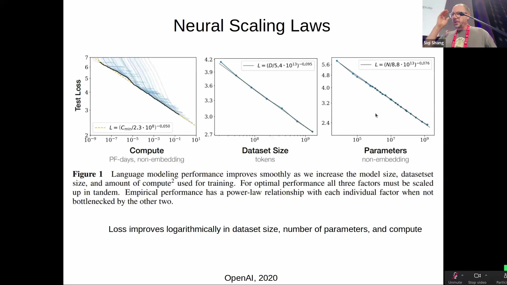
그러나 로보틱스에는 두 가지 불리함이 있다. 첫째, 인터넷 규모의 행동 데이터가 존재하지 않는다. 둘째, 언어 모델의 가벼운 오류와 달리 로봇의 오류는 장비 파손, 안전사고, 생산 중단으로 이어질 수 있어 요구 신뢰도가 훨씬 높다.
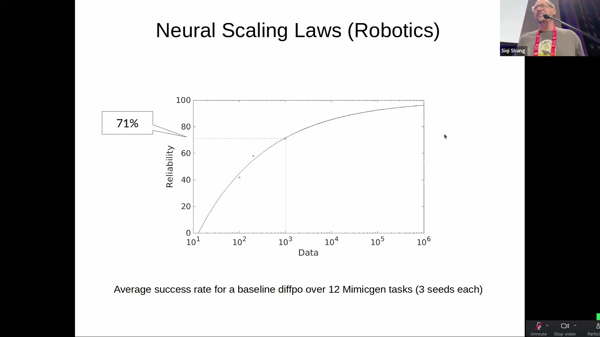
“로마와 한 번만 더 이렇게 이기면 우리는 완전히 파멸한다.”
피로스 왕의 일화 · 발표 00:28:00
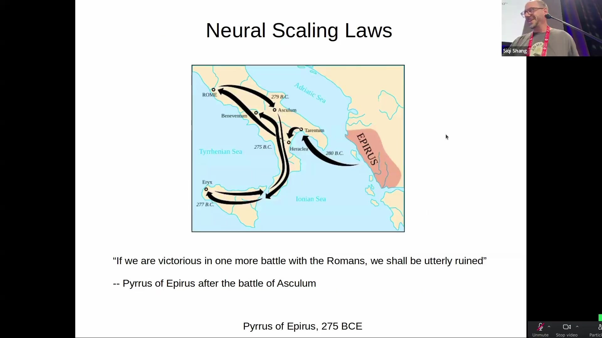
그래서 목표는 곡선 위에서 더 비싼 지점으로 이동하는 것이 아니라 곡선 전체를 왼쪽으로 옮기는 것이다. 기하 구조와 등변성은 같은 성능에 필요한 데이터, 파라미터, 연산량을 낮추는 메커니즘으로 제안된다.
Platt의 결론은 과거의 정교한 물리 모델로 완전히 회귀하자는 급진론이 아니다. 데이터의 역할을 없애자는 것도 아니다. generalist 모델 쪽으로 지나치게 이동한 현재의 균형점을 기하 구조가 있는 방향으로 조금 되돌려, 필요한 데이터의 규모를 현실적인 수준으로 낮추자는 절충안이다.
07 · Field Implications
굴착 로봇에 적용한다면
굴착은 이 아이디어의 가능성과 한계를 동시에 잘 보여주는 도메인이다. 붐·암·버킷의 기구학은 명확하고, 토사 더미와 트럭 적재함의 배치는 현장마다 크게 달라진다. 자세 변화가 클수록 등변 모델의 이득이 커졌다는 발표 결과를 따르면, 구조를 활용할 여지가 상당하다.
SO(3) 전체보다 SO(2)가 자연스럽다
중력과 지면 법선이 수직 방향을 고정하므로 모든 3D 회전이 대칭인 것은 아니다. 반면 선회체가 수직축을 중심으로 어느 방향을 향하든 굴착 동작의 구조는 유사하다. 수직축 회전 대칭을 명시하는 SO(2) 등변 모델이 현실적인 출발점이다.
LiDAR와 스테레오는 단순한 센서 추가가 아니다
RGB 구면 표현보다 포인트 클라우드에서 더 큰 효율 향상이 나타난 결과를 고려하면, 3D 센서는 정책이 활용할 수 있는 기하 구조를 늘리는 모델 설계의 일부가 된다.
현장 데이터가 비쌀수록 귀납 편향의 가치가 커진다
굴착 데이터는 인터넷에 없고 수집에는 장비, 작업자, 토공 환경이 필요하다. 데이터를 10배 더 모으는 대신 모델의 효율을 높이는 쪽이 경제적으로 더 현실적일 수 있다.
강체와 토사를 분리하는 하이브리드가 필요하다
기계 기구학에는 등변 구조를 강하게 적용할 수 있지만 토사는 변형체다. 로봇 본체와 도구는 기하 모델로, 토사 상호작용은 학습 기반 잔차나 별도의 물질 모델로 다루는 구성이 유력하다.
도입 전 점검표
- 과제에서 실제로 반복되는 병진·회전 대칭이 무엇인지 먼저 정의한다.
- 중력, 지면 경사, 마찰 이방성처럼 대칭을 깨는 요인을 별도로 기록한다.
- RGB, 스테레오, LiDAR 중 유지할 수 있는 3D 구조와 센서 비용을 함께 비교한다.
- 비등변 기준선과 동일한 데이터 예산으로 비교해 곡선 이동 여부를 측정한다.
- 모방학습의 향상과 실제 온라인 RL의 데이터 효율을 분리해 검증한다.
08 · Limits & Open Questions
강한 결과, 그러나 아직 제한된 증거
벤치마크 범위
최대 10배 향상은 MimicGen과 3~10개 물체의 다물체 강체 모델링 범위에서 입증됐다. 발표자는 나머지 일반화 가능성을 “일화적 증거”로 구분한다.
대칭이 깨질 때의 적응
중력, 기울어진 지면, 방향별 마찰이 있는 환경에서 모델이 구조적 가정으로부터 얼마나 잘 벗어나는지는 정량적으로 제시되지 않았다.
강체 중심의 세계관
변형체나 유체에서는 적절한 대칭군을 정의하고 유지하기가 더 어렵다. 의복, 케이블, 토사 같은 과제에는 추가 모델링이 필요하다.
RL 발표와 BC 증거의 간극
발표의 문제 설정은 실기 RL이지만 핵심 정량 결과는 주로 모방학습 설정에서 나왔다. 등변 구조가 실제 온라인 RL의 샘플 효율을 같은 비율로 높이는지는 후속 검증이 필요하다.
발표에 남은 세 가지 미해결 문제
| 문제 | 현재 상태 | 필요한 검증 |
|---|---|---|
| Diffusion head 위의 RL | FPO, DPPO 등이 시도 중이지만 여전히 어렵다. 비-diffusion 대안도 재검토되고 있다. | 동일한 계산·데이터 예산에서 안정성과 최종 성능 비교 |
| Q 함수와 정책 정렬 | RL 시작 시 정책 성능이 떨어지지 않도록 초기 가치 추정과 actor를 맞춰야 한다. | 오프라인 데이터에서의 사전 정렬과 온라인 전환 실험 |
| 리셋과 보상 | 현장 적용 비용을 결정하는 운영 문제로 남아 있다. | 자동 리셋, 인간 개입 빈도, 보상 오설계에 대한 강건성 측정 |
09 · Source Notes
자료와 해석의 범위
이 글은 아래 발표의 주장, 슬라이드, 정량 결과를 중심으로 재구성한 분석 리포트다. 수치와 논문 선정 이력은 발표에서 제시된 내용을 따른다.
- 주요 출처: Robert Platt, “Model Matters — Leveraging Geometry in Robot Learning,” ICRA 2026 RL4IL Workshop. Zhanpeng He 채널, YouTube 영상, 2026년 6월 8일 게시.
- 정량 근거: MimicGen 과제에서 발표자가 제시한 Equivariant Diffusion Policy 및 Image 2 Sphere Policy 비교 결과. 최대 10배와 약 2배는 서로 다른 표현과 실험 설정의 결과다.
- 이론적 근거: Noether 정리와 군 등변 신경망에 대한 설명은 발표의 설계 논리를 요약한 것이다. Noether 정리가 특정 신경망 구조의 성능을 직접 보장한다는 의미는 아니다.
- 편집자 해석: 굴착기, SO(2) 대칭, 강체–토사 하이브리드에 관한 부분은 발표 내용을 산업 현장에 연결한 분석이며 발표자가 직접 보고한 실험 결과가 아니다.
- 이미지: 모든 도판은 제공된 발표 영상의 타임스탬프 프레임이다. 캡션의 시각 표기는 해당 논점이 등장하는 대략적인 위치를 나타낸다.
마지막으로
로봇 학습은 구조와 규모 중 하나만 선택해야 하는 문제가 아니다. 데이터는 여전히 필요하고, generalist 모델의 유연성도 중요하다. 다만 데이터가 비싸고 실패 비용이 큰 물리 세계에서는 모델이 이미 알 수 있는 것을 굳이 처음부터 다시 배우게 해서는 안 된다.
Platt의 제안은 간명하다. 세계가 회전하면 정책도 함께 회전하게 만들고, 공간이 이동하면 추론도 그 이동을 이해하게 만들자. 그렇게 얻은 효율로 데이터 요구량을 0으로 만들 수는 없어도, 불가능한 규모를 현실적인 규모로 바꿀 수는 있다. 로보틱스가 옮겨야 할 것은 다음 데이터 포인트가 아니라 곡선 자체다.